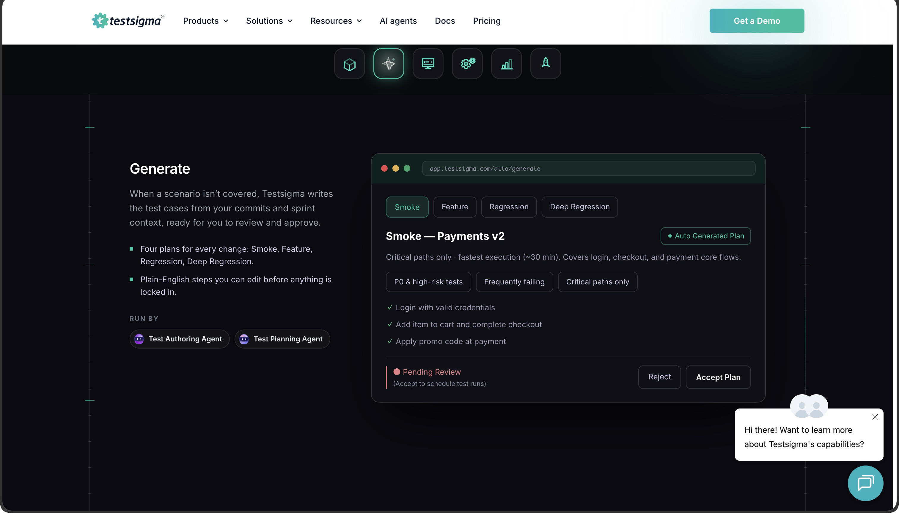
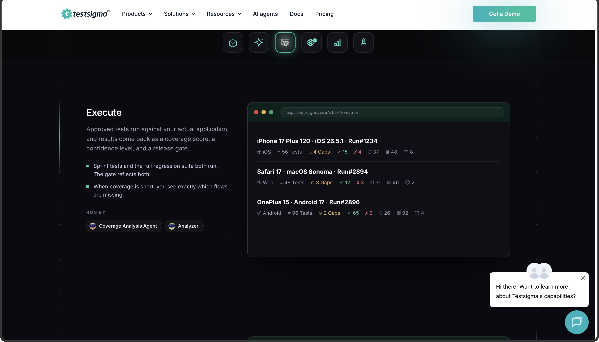
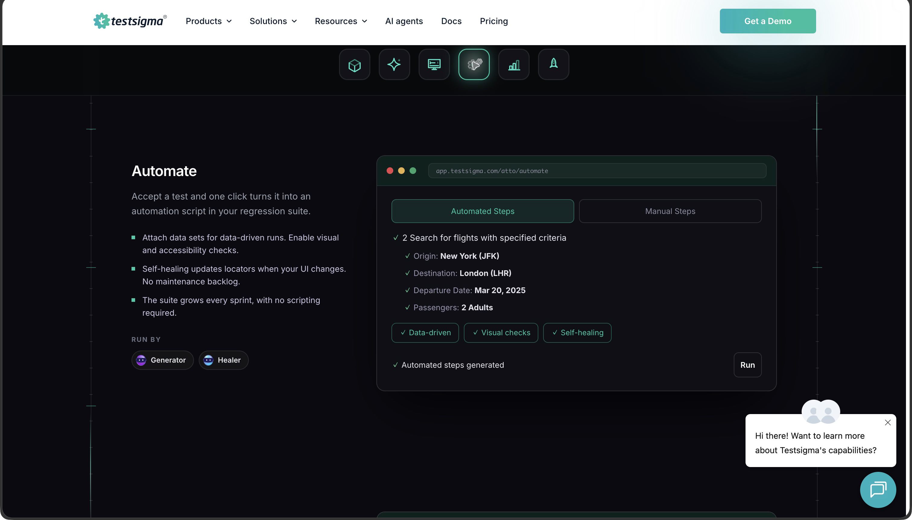
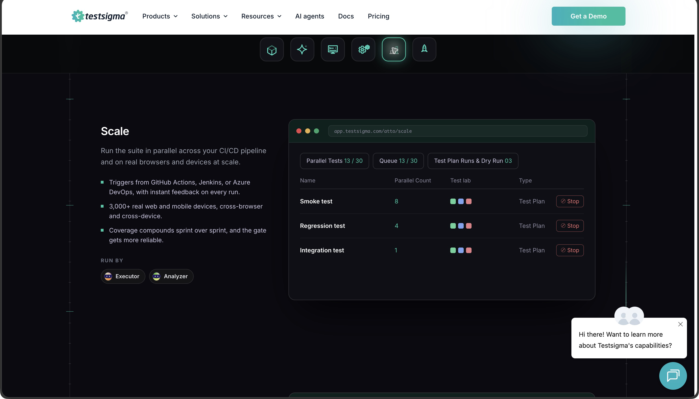
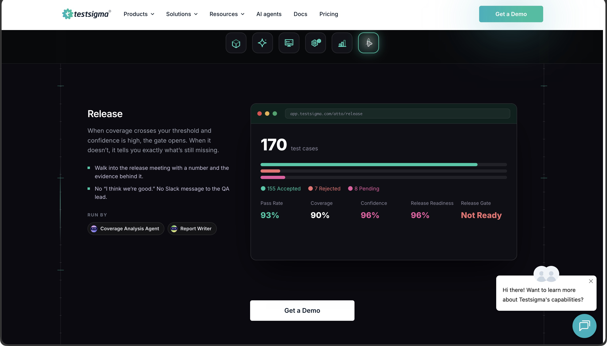

Testsigma／Atto — 機能・導線・画面
確認日：2026年10月27日。全体比較・画面／動画ギャラリー
調査範囲
Testsigmaの管理・自動化とAttoのAgent群。公式の操作可能な紹介表示とDocsを確認。Agent数等のページ間の差を固定仕様にしない。
比較上の位置：要求・実行・リリース判断の直接比較。追加理由：要求・既存テスト・coverage・人のaccept・実行・release gateを一巡させるため。
公式トップの章を切り替えて撮影。紹介表示のサンプル値であり、製品アカウント内での生成・学習・実行ではない。旧v2記事は検索に残るが直接取得が404のため現行UIと同一視しない。
作業の流れ
Commit・story等 → Generate／context → Tests・Coverage・Test Plan → review・accept → Execute／Automate → Scale → Report・Release gate
機能の構成
QI Home／Adhoc・Playground、Tests・Coverage・Test Plan、Create Tests > Test Cases、Copilot／Live Editor。公開紹介のCommit・Generate・Execute・Automate・Scale・Release。
下表は公開説明・文書の要約。実操作した範囲は画面一覧と調査範囲に限定し、表全体を実機検証済みとはしない。
| 段階 | 画面・機能 | 入力・操作と次の行動 |
|---|---|---|
| 文脈 | Playground・source | 要求・文書・設計等を添え、生成の目的を指定する。 |
| 生成 | Generate with Atto | 既存libraryを参照して重複を避ける機能と、生成進捗・summaryを説明。 |
| 確認 | Tests・Coverage・Test Plan | 生成ケースのreview・accept、足りないscenarioと確認範囲を分ける。 |
| 学習 | Agentic Learning | 対象アプリを探索し、足りない操作・誤った経路を補正するというDocs説明。 |
| 実行・介入 | Copilot・Live Editor | 実行しながらdebugする。pause・stop・manual recording・accept等を案内。 |
| 資産化 | Automate | 承認した内容から自動化手順を作り、回帰資産へつなぐ。 |
| 運用 | Scale・Test Plans | 環境・並列実行・schedule・実行集合を管理する。 |
| 判断 | Reports・Release | 成否だけでなくaccepted／pending・coverage・confidence・gateの説明例を示す。 |
人の担当と比較上の着眼点
目的・文脈、生成ケースのaccept、検査と期待、release判断を担当する。
調査者の解釈：TouchstoneやTestNeoと同様に、要求から判断まで既に競争があることを示す重要な比較先。 製品性能の優劣を実証した結論ではない。
動画と見る場面
製品操作を確認できる動画を今回保存できていない。存在しない・非対応という意味ではない。問い合わせ画面で代用しない。
画面一覧
| 画面 | 種別 | 出典 |
|---|---|---|
 Commit：PR・session・storyを確認範囲へ結び付ける Commit：PR・session・storyを確認範囲へ結び付ける |
official-ui-example | 掲載元 |
 Generate：計画案とaccept／reject |
official-ui-example | 掲載元 |
 Execute：端末・browser別の状態 |
official-ui-example | 掲載元 |
 Automate：手動stepから自動化stepへ |
official-ui-example | 掲載元 |
 Scale：並列枠・queue・実行集合 |
official-ui-example | 掲載元 |
 Release：review・coverage・release gate |
official-ui-example | 掲載元 |